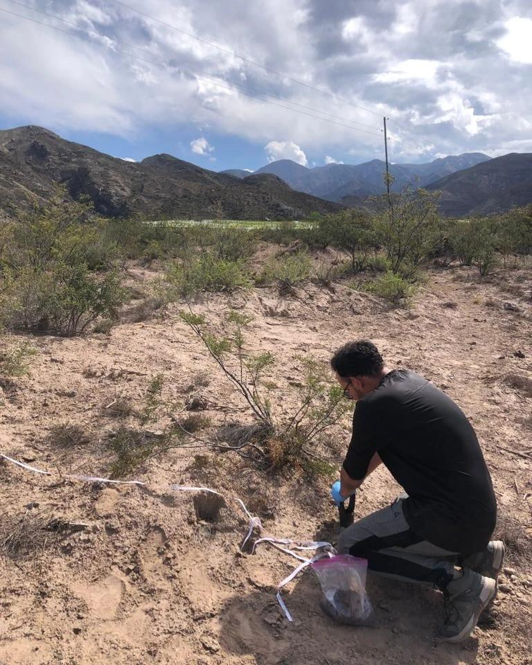
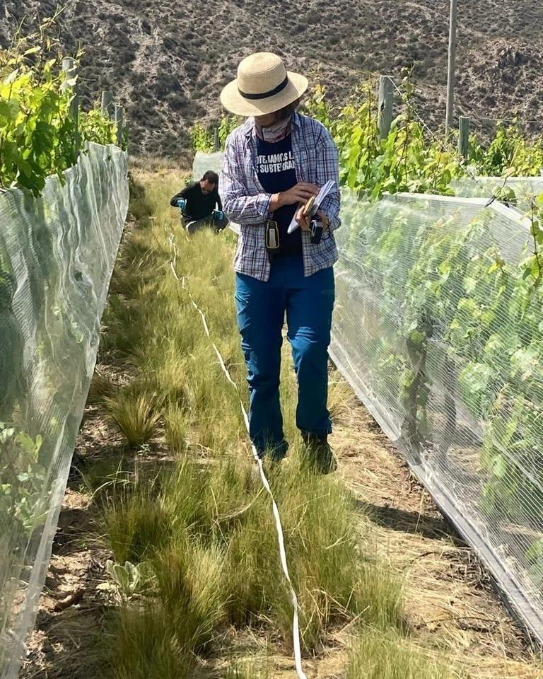
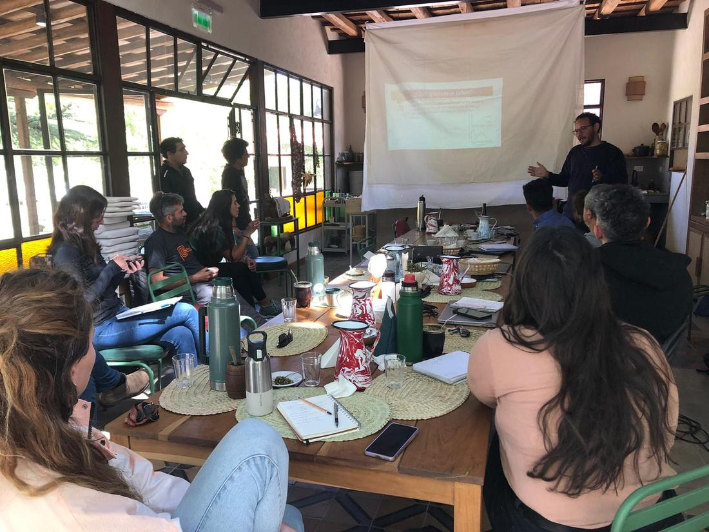
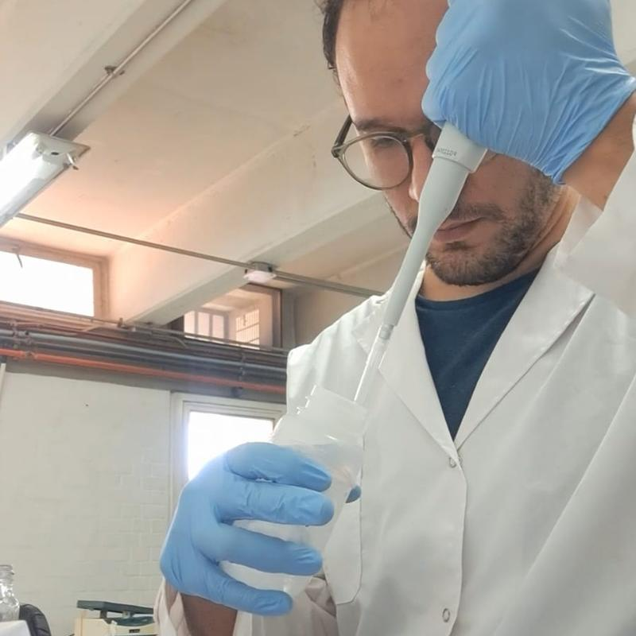

Por qué los hongos del suelo importan en una finca
En una cucharada de tierra viven cientos de especies de hongos que no vemos, pero que influyen en cómo crecen las plantas.
Aliados de las raíces
Los hongos micorrícicos se asocian a las raíces de la vid y de las plantas nativas y las ayudan a obtener agua y nutrientes de forma más eficiente y a tolerar la sequía.
Recicladores
Otros descomponen la materia orgánica, como hojas, sarmientos y restos de poda, y devuelven sus nutrientes al suelo.
Enfermedades y su control
Algunos pueden causar enfermedades, y otros ayudan a controlar enfermedades y plagas. Entender qué favorece a cada grupo ayuda a mantener suelos sanos en la finca y en la vegetación nativa.
El proyecto
En un estudio anterior tomamos muestras en 37 parches de vegetación nativa del Monte junto a viñedos, en seis provincias del oeste argentino, y encontramos más de 800 tipos de hongos. Vimos que la cantidad de viñedo alrededor cambia cuántos hongos viven en esos parches, y que el clima de cada zona decide cuáles.
Ahora queremos dar el paso siguiente: sumar los viñedos al estudio y recorrer un gradiente climático más amplio, que abarca cuatro ecorregiones del centro-oeste del país: el Monte, el Chaco Seco, el Espinal y la Pampa. La pregunta es cuánta vida del suelo comparten el viñedo y la vegetación nativa que lo rodea, y cómo cambia eso con el clima y con el paisaje.
El proyecto forma parte de una tesis doctoral y está financiado por SPUN a través de su programa Underground Explorers. SPUN es una organización internacional que estudia y protege las redes de hongos del suelo en todo el mundo. El trabajo se desarrolla en el IADIZA, instituto del CONICET en Mendoza.

Qué necesitamos
Buscamos fincas con parcelas de Malbec (preferentemente) en estas zonas, que cubren las cuatro ecorregiones del estudio:
Monte
San Rafael y General Alvear (sur de Mendoza) y 25 de Mayo (La Pampa).
Chaco Seco
Norte de San Luis, Merlo y alrededores, y Villa Dolores y La Paz (Córdoba).
Espinal
Centro de La Pampa, en la zona del caldenal: Telén y General Acha.
Pampa
Noreste de La Pampa: Trenel, Arata, Eduardo Castex, Winifreda, Caleufú y Pichi Huinca.
En cada finca necesitamos su permiso para tomar pequeñas muestras de suelo en dos lugares:
- En una parcela de viñedo, preferentemente de Malbec, siempre en el interfilar, sin tocar las plantas.
- En la vegetación nativa cercana, dentro de la finca o en sus alrededores.
Es una sola visita en primavera (entre octubre y noviembre de 2026), de alrededor de una hora por sitio, en el día y horario que a usted le quede cómodo. Participar no tiene ningún costo.
Los datos de cada finca son confidenciales. Analizamos todas las fincas en conjunto y no publicamos resultados individuales. Los datos se usarán exclusivamente con fines académicos y no comerciales.
Cómo es el muestreo
Seguimos el protocolo internacional de SPUN, el mismo que se usa en expediciones de muestreo en decenas de países.
- Marcamos con una cinta métrica una parcela de 30 × 30 m. No clavamos estacas ni dejamos marcas.
- En cada uno de los nueve puntos retiramos la hojarasca y sacamos un pequeño cilindro de tierra con un sacabocado manual.
- Mezclamos las nueve porciones y nos llevamos una bolsa ziploc con aproximadamente 500 g de tierra por parcela.
- Tapamos los pocitos y seguimos. En el laboratorio del IADIZA extraemos el ADN de los hongos y analizamos la química del suelo.

Lo que no vamos a hacer
- Muestreamos solo en el interfilar: no tocamos las plantas, el sistema de riego, los postes ni la cosecha.
- No usamos maquinaria, químicos ni cortamos plantas.
- Desinfectamos las herramientas entre sitio y sitio para no llevar tierra de una finca a otra.
- Coordinamos cada visita con usted y respetamos las normas y los horarios de trabajo de la finca.
Qué aporta su participación
Los hongos del suelo, y en especial los micorrícicos, sostienen beneficios clave para la finca y para el ambiente natural. Pero todavía sabemos muy poco sobre cómo los afectan el paisaje y el clima en las zonas vitivinícolas del centro-oeste argentino.
Conocimiento para conservarlos
Los resultados mostrarán cómo influye la cantidad de vegetación nativa en el paisaje sobre estos hongos, cuánto aporta la vegetación nativa a los hongos dentro de la finca y cómo los distintos climas modulan estos efectos.
Bases para un manejo sustentable
Entender qué favorece a estos hongos ayuda a conservar los beneficios que brindan al viñedo y a la vegetación nativa.
Charlas, talleres y divulgación
Compartiremos los resultados generales en una devolución presencial con los productores que participen, y los difundiremos en distintos formatos de divulgación científica. Puede seguirnos en Instagram: @astrobiodavid, @catadeciencias y @spununderground.
Un aporte con nombre propio
Si usted quiere, su finca aparece como colaboradora en las publicaciones y en los materiales de divulgación del proyecto.
Cómo nos gustaría trabajar con usted
Nos interesa que el proyecto se construya con los productores, no solo en sus fincas. Si quiere, puede acompañarnos el día del muestreo y ver cómo trabajamos. También nos gustaría conversar sobre cómo maneja su finca y qué preguntas tiene sobre su suelo, para que el estudio responda también a las inquietudes de los productores.
Con su permiso, grabaremos cómo trabajamos en el campo para producir material audiovisual de divulgación científica, que compartiremos en redes y en espacios como Cata de Ciencias y Radio Matices del Vino. Si lo desea, usted también puede participar de las grabaciones: nos interesan su punto de vista y su conocimiento sobre la finca y el paisaje.
Además, estamos abiertos a seguir trabajando juntos en otros proyectos más allá de este estudio.

Calendario
- Septiembre y octubre de 2026Contacto con las fincas y coordinación de visitas.
- Octubre y noviembre de 2026Muestreo de suelo en primavera.
- Diciembre de 2026 a mayo de 2027Trabajo de laboratorio y análisis de datos.
- Junio de 2027Presentación de los resultados generales en un taller con los productores.
Quién soy
Soy David José de la Cruz López, biólogo y doctorando en Ciencia y Tecnología en la Universidad Nacional de Cuyo, con beca doctoral del CONICET. Trabajo en el Laboratorio de Interacciones Ecológicas (INTERACTIO) del IADIZA, en Mendoza, donde estudio cómo responde la vida del suelo al paisaje y a las prácticas agrícolas en los viñedos, usando ADN ambiental.
- Licenciado en Ciencias Biológicas por la Universidad Nacional de San Luis, donde empecé a trabajar con ADN ambiental en mi tesis de grado.
- Presenté mi trabajo en la Reunión Argentina de Ecología (RAE), en Mendoza, y en el 15.º Congreso Internacional de Terroir (2024).
- En Ecuador, lo presenté en el Simposio de Micorrizas y en el Congreso Latinoamericano de Micología.
- Integro la oficina de comunicación científica del IADIZA y creé el proyecto de divulgación ARN mensajero.
Dirijo este proyecto como parte de mi doctorado. Mis directores de tesis son la Dra. Melanie Roy (IRL IFAECI, especialista en hongos del suelo) y el Dr. Diego Vázquez (IADIZA-CONICET). En el equipo también trabajan la Dra. Micaela Santos y la Dra. Paula Cornejo (IADIZA-CONICET).

Preguntas frecuentes
¿Tengo que pagar algo o firmar algún compromiso?
No. Participar es gratuito. Solo le pedimos su autorización para ingresar y tomar las muestras.
¿Qué pasa con los datos de mi finca?
Son confidenciales. Analizamos todas las fincas en conjunto y no publicamos resultados, nombres ni ubicaciones de fincas individuales. Su finca aparece como colaboradora solo si usted lo autoriza. Se usan exclusivamente con fines académicos y no comerciales.
¿Puede afectar mi viñedo?
No. Sacamos nueve pequeños cilindros de tierra (5 cm de ancho y 10 cm de profundidad) en el interfilar, sin tocar las plantas, y volvemos a tapar los pocitos. Desinfectamos las herramientas entre fincas.
¿Y si después cambio de opinión?
Puede dejar de participar cuando quiera, sin dar explicaciones.
¿Voy a recibir resultados de mi finca?
El estudio analiza el conjunto de las fincas para entender el efecto del paisaje y el clima a escala regional, por eso no preparamos informes individuales. Compartiremos los resultados generales en un taller a mediados de 2027.